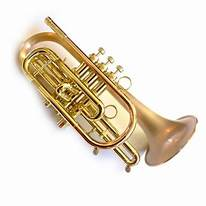

Trumpet
a brass instrument commonly used in both classical and contemporary music genres. It is characterized by its cylindrical tubing, flared bell, and three valves used to manipulate the instrument's pitch. The trumpet produces sound when a musician blows air through a cup-shaped mouthpiece, causing the air to vibrate within the instrument's tubing. It is known for its bright and powerful sound quality, often used to lead melodies, provide fanfares, and add dynamic accents to musical compositions. The trumpet has a rich history spanning centuries and remains a prominent fixture in orchestras, jazz bands, marching bands, and various other ensembles.

July 23, 2024